All Comparisons
Category
41 comparisons found
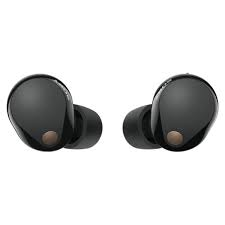
AirPods Pro 2 vs Sony WF-1000XM5 (2026): Which Earbuds Are Actually Better?
AirPods Pro 2 vs Sony WF-1000XM5 compared for sound, noise cancellation, battery life, comfort, calls,...
BMW i4 vs Tesla Model 3
BMW i4 vs Tesla Model 3 compared by range, charging, performance, technology, comfort, practicality, and ownership...
Chevrolet Lacetti vs Ravon Nexia 3 | 2026 Ultimate Comparison
Chevrolet Lacetti vs Ravon Nexia 3 compared for performance, comfort, fuel use, maintenance, practicality, and...

Dyson vs Xiaomi Air Purifier | Ranking-Hours
Dyson vs Xiaomi air purifiers compared for filtration, airflow, smart features, noise, replacement filters, and...
Google Pixel 8 vs iPhone 15 (2026): Which Smartphone Is Actually Better?
Google Pixel 8 vs iPhone 15 compared for cameras, performance, battery, software, display, features, and everyday...
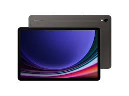
iPad vs Samsung Galaxy Tab: Which Tablet Fits?
An iPad and a Galaxy Tab can both be capable tablets, but the better fit depends on what you expect to do between...

iPhone vs Samsung Phones: Everyday Differences
Choosing between an iPhone and a Samsung phone often comes down to small things: camera behavior, connected...

MacBook vs Windows Laptop: A Practical Choice
The MacBook-versus-Windows question becomes simpler when it starts with software rather than brand loyalty. The...
Adobe Photoshop vs Canva vs Figma: 2026 Comparison
Compare Adobe Photoshop, Canva, and Figma across editing features, workflow, collaboration, learning curve, and...

PlayStation 5 vs Xbox Series X: 2026 Comparison
Compare PlayStation 5 and Xbox Series X across hardware, storage, controllers, games, subscriptions, and practical...
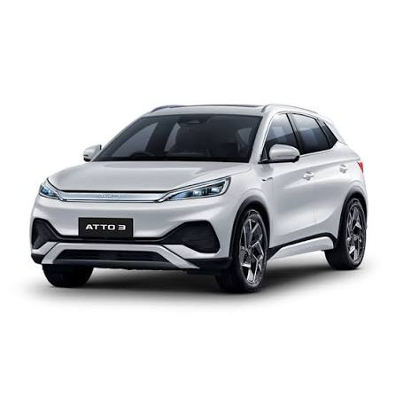
Tesla vs BYD Atto: An Electric-Car Comparison
Comparing electric cars means thinking beyond the range figure printed in a brochure. Charging and everyday...
Toyota vs Honda: Reliability, Comfort and Value
Toyota vs Honda compared on reliability, ownership costs, comfort and service — the exact model and maintenance...
Adobe vs DaVinci Resolve: Video Editing Workflows
Video editing software should be judged by the kind of projects it needs to carry from raw footage to a finished...

Antivirus Software: Protection, Usability and Cost
Security software has an unusual job: it needs to protect a computer without making ordinary work harder. That...
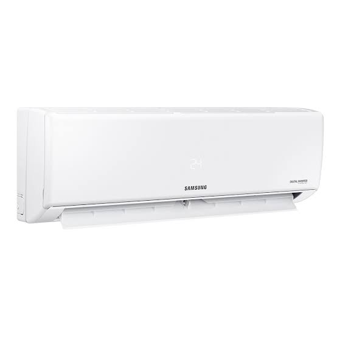
Apple vs Samsung: Comparing the Ecosystems
Apple and Samsung are not only phone brands; they are parts of wider device ecosystems. That makes the comparison...
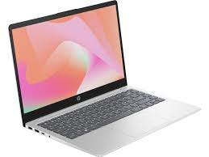
ASUS ROG vs MSI Gaming Laptops Compared
ASUS ROG and MSI gaming laptops compared by performance, cooling, displays, components, portability, features, and...
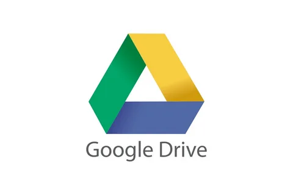
Cloud Storage: What Should You Compare?
Cloud storage is most useful when it quietly solves a problem: keeping files available, making sharing easier or...
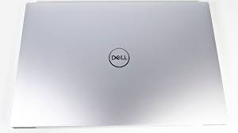
Dell XPS vs Lenovo ThinkPad: 2026 Comparison
Dell XPS vs Lenovo ThinkPad compared for build quality, performance, display, keyboard, portability, connectivity,...
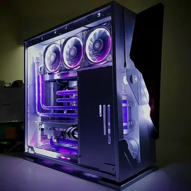
ASUS ROG vs MSI Titan vs Lenovo Legion: Gaming Laptop Comparison
ASUS ROG, MSI Titan, and Lenovo Legion gaming laptops compared for performance, cooling, display quality,...
Graphic Design Tools: Choosing a Workflow
Design software is easiest to compare by following a real project from start to finish. Features matter, but a...
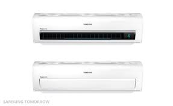
Gree vs Samsung Air Conditioners: A Practical Comparison
Air conditioning is one of those purchases where installation and the room can matter almost as much as the unit...
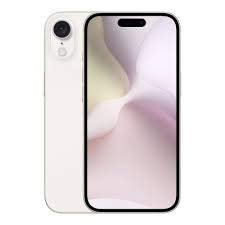
iPhone vs Samsung: Which Phone Fits Your Routine?
Choosing between iPhone and Samsung is less about a universal winner and more about which phone makes the repeated...
Camera comparisons and buying guidance — Ranking Hours
Explore camera comparisons covering sensor size, image quality, autofocus, lenses, video features, and...
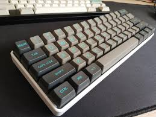
Mechanical Keyboard Switches: Cherry MX Compared
Compare Cherry MX Red, Blue, and Brown mechanical switches by feel, actuation, sound, and typical uses for gaming...

LG vs Bosch Washing Machines - How LG and Bosch Washing Machines Compare
LG vs Bosch washing machines compared by washing features, motor systems, noise, capacity, maintenance,...
MacBook vs Ultrabook: A Practical Laptop Comparison
Thin laptops are built for people who care about carrying a computer without giving up too much capability. The...
Microsoft Office vs Google Workspace | Ultimate 2026 Productivity Suite Comparison
Compare Microsoft 365 and Google Workspace for collaboration, productivity, file sharing, security,...
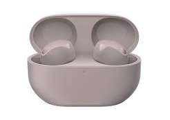
Best Headphones & Earbuds Comparison | 2026 Ultimate Audio Guide
Compare popular headphones and earbuds by sound, noise cancellation, comfort, battery life, connectivity, and...
Ultimate Gaming PC Build Guide 2026: Definitive $1000 to $2000 Configurations
Explore practical gaming PC build options from $1,000 to $2,000, with guidance on components, balance,...
Ultimate Podcast & Streaming Equipment Guide (2026) — Ranking Hours
Choose podcast and streaming gear with a practical guide to microphones, audio interfaces, headphones, recording...
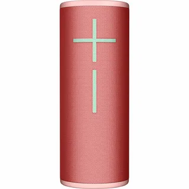
Portable Bluetooth Speakers: What to Compare
A portable Bluetooth speaker earns its place when it disappears into the routine: easy to carry, quick to connect...

PS5 vs Xbox Series X: A Practical Gaming Comparison
PlayStation 5 vs Xbox Series X compared for hardware, controllers, storage, games, subscriptions, performance, and...
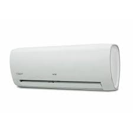
Samsung vs Artel Refrigerator Comparison
Samsung vs Artel refrigerators compared by cooling, capacity, energy use, inverter features, storage, controls,...
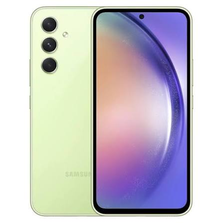
Samsung Galaxy A54 vs iPhone SE 2024: The Ultimate Mid-Range Smartphone Analysis
Samsung Galaxy A54 vs iPhone SE 2024 compared by display, cameras, performance, battery, software, features, and...
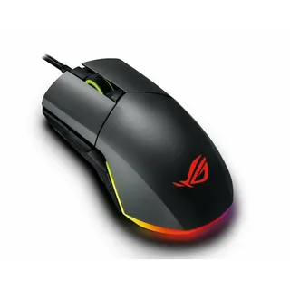
Gaming Mice In-Depth Guide: FPS vs MOBA vs RPG | Best Gaming Mouse Analysis
Compare gaming mice for FPS, MOBA, and RPG use, with practical guidance on sensors, buttons, shape, weight,...
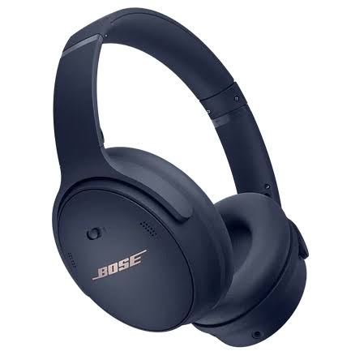
Sony WH-1000XM5 vs Bose QC45 Compared
Sony WH-1000XM5 vs Bose QuietComfort 45 compared for sound, noise cancellation, comfort, battery life,...

Samsung vs LG vs Sonos: The Ultimate Premium Soundbar Comparison Guide
Samsung, LG, and Sonos soundbars compared for sound, surround features, connectivity, setup, smart functions, and...
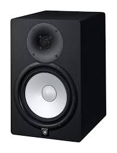
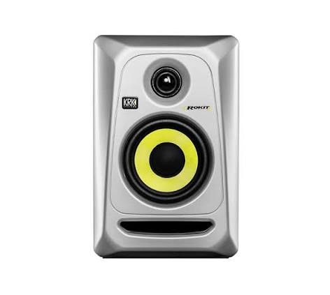
Studio Monitor Comparison
Compare studio monitors using published specifications and practical considerations such as frequency response,...
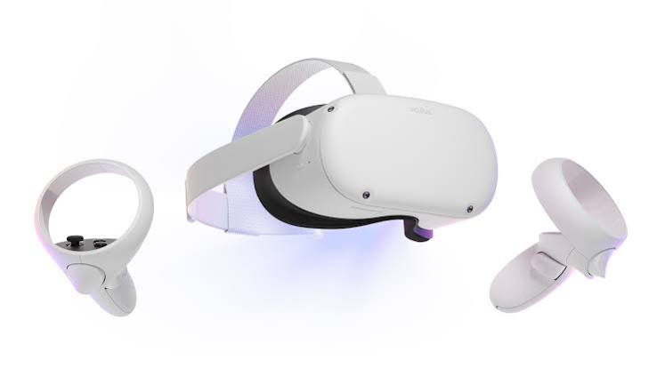
Oculus Quest 2 vs HTC Vive Compared
Oculus Quest 2 and HTC Vive compared for display, tracking, comfort, controls, games, setup, and practical virtual...
Windows 11 vs macOS Sonoma Compared
Windows 11 and macOS Sonoma compared by interface, software, hardware support, security, compatibility, and...

Xiaomi vs Google Phones: What to Consider
Xiaomi and Google phones can approach the smartphone experience differently, so a simple specification race misses...
By Category
Mobile Silicon
Laptops & PCs
Cars & EVs
Home Appliances
Top Comparisons
How We Verify the evaluation process
Comparisons follow a consistent editorial process. Where published measurements are used, the article should identify the source and the conditions reported by that source rather than presenting them as measurements made by Ranking Hours.
For EVs, we go beyond the advertised range - checking battery degradation over time, real efficiency under load, and how responsive the driver-assist systems actually are.
Staying Neutral
We disclose our test parameters openly, and never adjust them to favor one brand's ecosystem over another.
This keeps the editorial conclusion separate from commercial relationships and makes the basis for each comparison easier for readers to inspect.
All Comparisons | Ranking Hours is most useful when read as a practical guide to the specific situation described on this page. The practical balance comes from the whole setup: what is connected, how often it is used and what the owner expects from it.
Controls, charging, storage and cleaning are small details, but repeated interactions can make them important over time. It fits with By Category, and it's a reminder that daily habits shape the right choice as much as specs do.
Different users can reasonably value the same product differently because their routines and priorities are not identical. Within By Category, this detail is easy to overlook but shouldn't be.
Compatibility, available space, setup requirements and maintenance can matter more than a secondary feature that is rarely used. This ties back to By Category, which is where the difference tends to show up in daily use.
Begin with the job the product needs to perform and identify the constraints that cannot easily be changed later. It's worth keeping in mind under By Category, since that's where it actually plays out.
Warranty and service arrangements belong in the comparison because ownership continues after the purchase. This connects with By Category — a good example of why the specifics matter more than a headline spec.
How the main points fit together
The discussion of “By Category” is easier to apply when it is considered alongside “Mobile Silicon”. One describes an individual part of the decision, while the other helps show how that part affects the broader everyday experience.
For All Comparisons Ranking Hours, the final check should focus on the exact version being considered and the conditions in which it will be used. Daily routines reveal details that are easy to miss in a specification list, from the placement of controls to the effort needed for maintenance.
With All Comparisons Ranking Hours, it is sensible to note which differences are likely to be noticed every day and which are mainly relevant to a narrower situation. A feature can look minor on a product page but become important when the same action is repeated every day.
The surrounding equipment matters for All Comparisons Ranking Hours as well. Existing devices, accessories, software or space can change the practical value of an otherwise attractive option. A feature can look minor on a product page but become important when the same action is repeated every day.
Over time, the easiest product to live with is often the one whose setup and maintenance fit naturally into the owner's existing routine. Convenience is often cumulative: several small improvements can make a product easier to live with even when none is decisive on its own.
A reader comparing All Comparisons Ranking Hours should also separate product facts from personal preference. Features can be documented, while comfort and convenience may depend on the individual routine. The longer a product stays in regular use, the more useful it is to consider the small interactions that happen again and again.